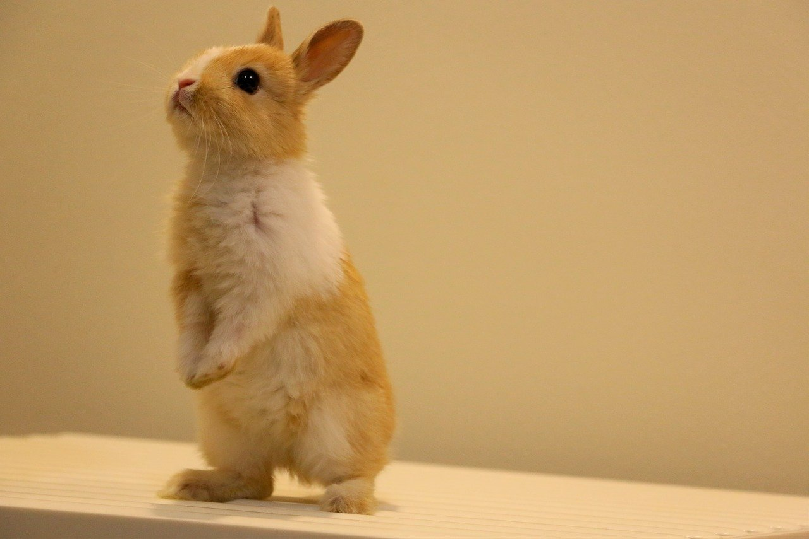
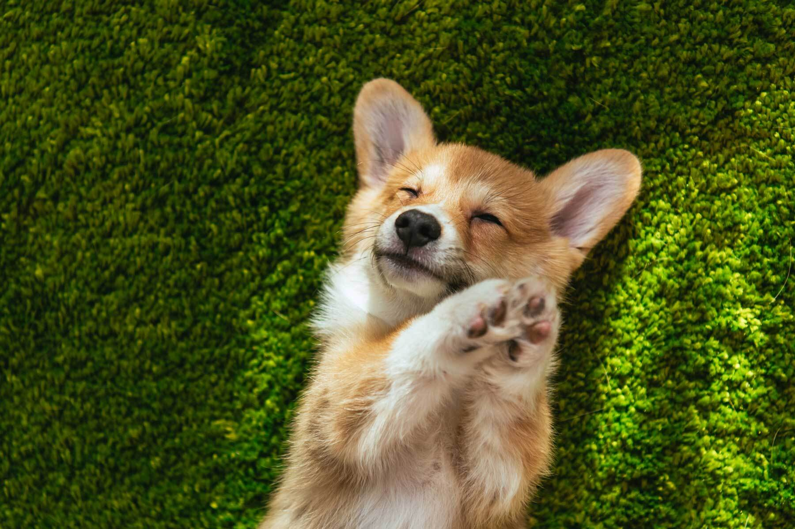
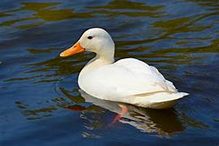

關於我
嗨！我是 Leo，目前就讀於國立臺灣大學健康產業管理學系。
我熱愛生命與自然，從小就喜歡接觸動物。選擇這個科系，是因為我希望未來能把健康管理和動物照護結合起來，改善人與動物共同生活的品質。
我個性開朗、細心，喜歡觀察動物的行為，也樂於和人分享照護經驗。
大學生活
大學生活充滿探索：課程包含健康管理、醫療政策、產業分析等，讓我開始理解整個健康產業的運作方式。
課餘我參加了校內動物保護社團，負責幫忙照顧校園流浪貓，並與社團夥伴一起辦小型領養、宣導活動。
與朋友在圖書館討論課業與未來計畫，是我最享受的日常之一。
我的寵物




興趣與喜好
- 📸 攝影：記錄生活與寵物瞬間
- 🍰 烘焙：嘗試做簡單甜點放鬆心情
- 🎧 聽音樂：適合讀書時的輕音樂
- 🌿 散步：喜歡帶寵物到公園走走
未來目標
短期：在大學打好健康管理與產業分析的基礎，參與更多與寵物健康相關的專案。
中長期：希望進入研究所深造，或參與寵物健康/動物醫療相關的產業，推動更完善的寵物照護服務。
喜歡的名言
「善待動物，也是在善待我們自己。」
—— Leo